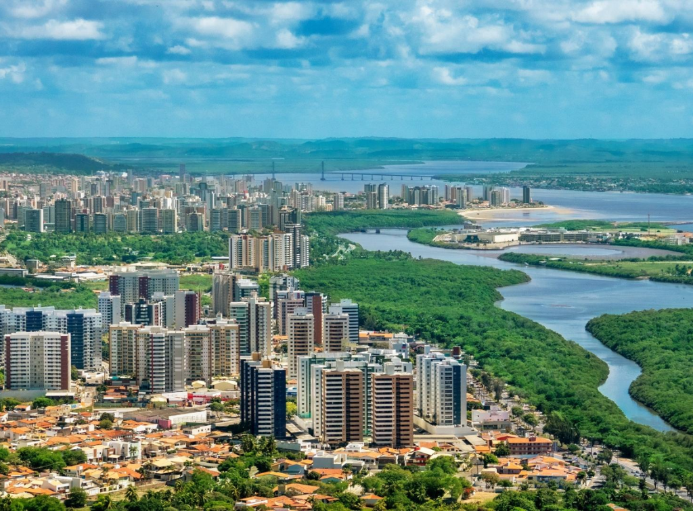

Sergipe é o menor estado do Brasil em extensão territorial e está localizado na Região Nordeste do Brasil. Sua capital é Aracaju, uma cidade planejada e conhecida por suas praias tranquilas e qualidade de vida. Sergipe possui clima quente durante quase todo o ano e uma paisagem que mistura litoral, rios e áreas de interior. A economia do estado é baseada principalmente no comércio, na indústria, no turismo e na produção de petróleo e gás natural, que têm grande importância para a região. Entre os principais pontos turísticos estão a Cânion do Xingó, uma das maiores formações rochosas navegáveis do mundo, e a Praia do Saco, famosa por suas águas claras e dunas. A Orla de Atalaia, em Aracaju, também é um dos cartões-postais mais conhecidos do estado.
